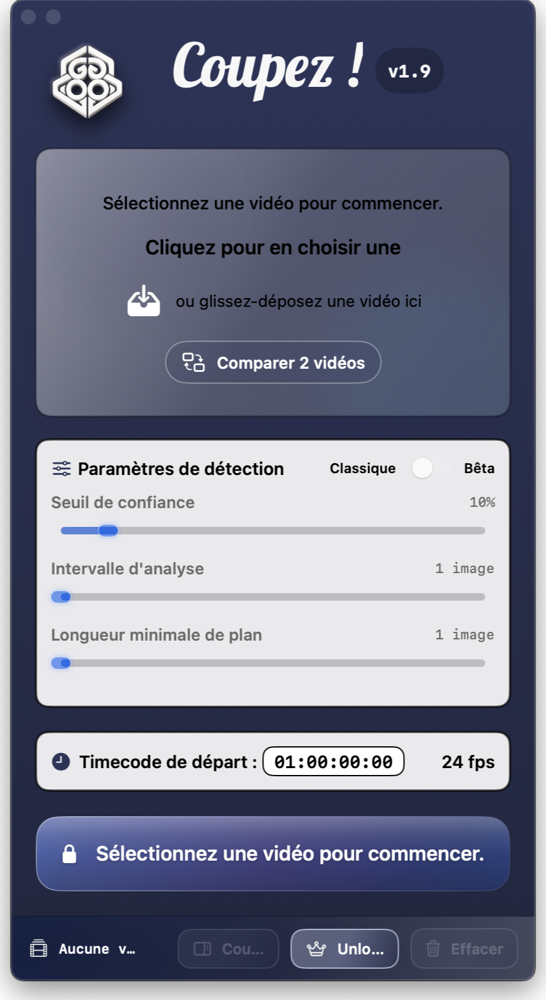
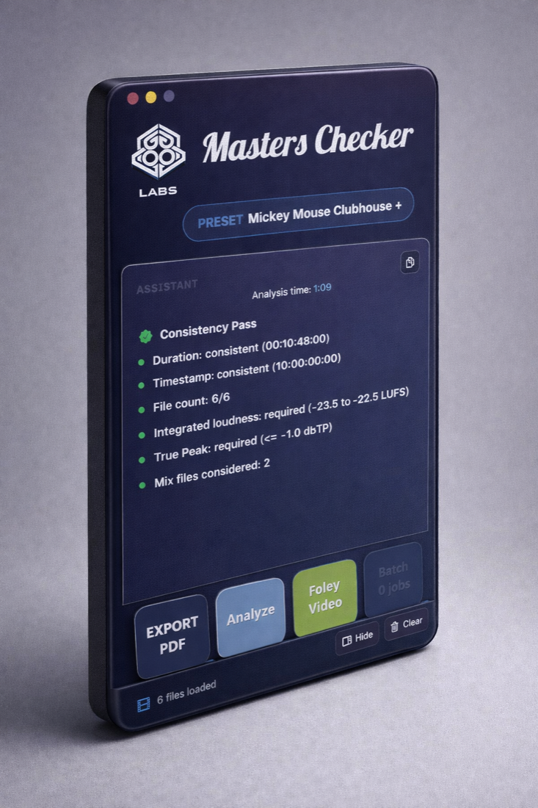

Local-first by default
Media stays close to the workstation, processing stays predictable, and exports do not depend on fragile remote loops.
Software studio for post-production
GogoLabs builds macOS software for editors, mixers, and finishing teams. The studio focuses on workflows where momentum is usually lost: repetitive checks, fragile handoffs, and too many technical steps between analysis and delivery.
Gogo Labs
see the developper's page
Principles
Media stays close to the workstation, processing stays predictable, and exports do not depend on fragile remote loops.
The software is shaped around concrete decisions in post-production: inspect, compare, validate, export.
Fewer states, clearer outputs, and interfaces that reduce friction instead of adding more process.
Apps
For editors and conform teams
Coupez ! turns picture analysis into export-ready conform work without forcing teams through brittle manual review.

For mixers, QC, and finishing
Masters Checker brings loudness analysis, dialogue measurement, reporting, and final delivery actions into one controlled macOS workspace.

Team
Leads product and engineering, translating demanding post-production workflows into tools that stay precise and controllable under pressure.
Shapes direction, messaging, and clarity so each product decision stays grounded in real user needs.